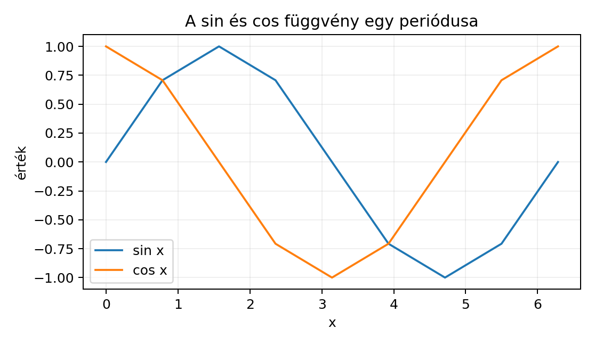

2.2 Függvények és ősképek: a
műveletekkel felcserélhető művelet
2.2.1 Motiváció
A mértékelméletben lépten-nyomon halmazokat vizsgálunk egy függvény
mentén: ha
egy függvény, akkor az olyan kérdések, mint „mely pontokban nagyobb
értéke
-nél?”,
vagy „mely pontok kerülnek egy adott tartományba?” mind
ősképek kiszámítását jelentik. Az őskép azért lesz a
mértékelmélet egyik alapművelete, mert – mint látni fogjuk – a
halmazműveletekkel tökéletesen felcserélhető. Ez teszi lehetővé, hogy a
mérhető halmazok rendszerét függvények mentén „visszahúzzuk”, és így
építsük fel a mérhető függvények fogalmát.
Ebben az alfejezetben pontosan megismerjük a kép és
az őskép fogalmát, bebizonyítjuk az őskép műveletekkel
való felcserélhetőségét, és megmutatjuk, hogy a kép esetében ugyanez
általában nem igaz. A szinthalmazok és a kompozíció ősképének tárgyalása
közvetlenül előkészíti a későbbi mérhetőségi és integrálelméleti
fejezeteket.
2.2.2 Szemléletes kép
Tekintsük a valós értékű
függvényt. Ha arra vagyunk kíváncsiak, hogy mely
értékekre esik
a
intervallumba, akkor az
halmazt keressük. Ez éppen az
őskép. Az eredmény:
hiszen ha
,
akkor
,
tehát
.
Ez a kis példa már mutatja a lényeget: az őskép egy
halmazt ad vissza, nem egyetlen számot, és nincs
szükség ahhoz, hogy
invertálható legyen.
A kép ezzel szemben „előrefelé” dolgozik: ha
,
akkor
A két irány viselkedése alapvetően különbözik; ezt vizsgáljuk most
meg pontosan.
Statikus változat (mint a PDF-ben)
Őskép (balra) és kép (jobbra) az
függvénynél: az
sáv ősképe két intervallum, a
képe
.
2.2.3 Definíciók
Legyen
és
két tetszőleges halmaz, és legyen
egy függvény.
Definíció. Ha
,
akkor az
halmaz képe (image) alatt az
halmazt értjük. Az egész értelmezési tartomány képe az
értékkészlet (range).
Ha
,
akkor a
halmaz ősképe (preimage, inverse image) alatt az
halmazt értjük.
Emlékeztető. Az
függvény injektív, ha
esetén
;
szürjektív, ha minden
-hoz
van olyan
,
amelyre
.
Az őskép definíciójához egyik tulajdonság sem szükséges.
Megjegyzés. Az
jelölés itt nem inverz függvényt jelent! Az őskép
minden
halmazra értelmezve van, akkor is, ha
nem injektív, sőt akkor is, ha
nem szürjektív; az ősképhez sem injektivitást, sem szürjektivitást nem
kell feltételezni. Például az
,
függvény sem injektív, sem szürjektív; az
,
függvény szürjektív, de nem injektív; az őskép mindkét esetben ugyanúgy
értelmezett. Ha
véletlenül invertálható, akkor az inverz függvényt is
jelöli, de a két fogalom összhangban van: invertálható
esetén az
őskép éppen az inverz függvény által felvett képek halmaza.
2.2.4 Példák és ellenpéldák
Példa. Legyen
,
.
Az
halmaz képe:
.
A
halmaz ősképe:
.
A
halmaz ősképe:
,
hiszen
,
,
míg
-nek
nincs őse a valós számok között, mert
nem oldható meg.
Az egész
ősképe az
,
az üres halmazé pedig
.
Ellenpélda a kép metszettartására. A kép nem mindig
tartja meg a metszetet. Legyen
,
,
és tekintsük az
halmazokat. Ekkor
tehát
Ugyanakkor
és így
A két halmaz nem egyenlő:
.
Ez a példa azt mutatja, hogy a kép és a metszet nem cserélhető fel
minden esetben. Később bebizonyítjuk, hogy az egyik irányú tartalmazás
mindig teljesül.
2.2.5 Tétel: az őskép felcserélhető
a halmazműveletekkel
Tétel. Legyen
függvény, és legyenek
halmazok egy tetszőleges
indexhalmazra. Ekkor
ha
,
akkor
,
ahol
,
a jobb oldalon pedig a komplementer az
alaphalmazra vonatkozik.
Bizonyítási terv. Mindhárom állítás abból
következik, hogy az őskép definíciója egy logikai ekvivalencia:
pontosan akkor teljesül, ha
.
Ezért a halmazműveletek logikai műveletekké alakulnak, és a logikai
műveletek azonosságai adják az eredményt.
Bizonyítás.
Unió. Számítsuk ki a bal oldalt:
Mivel a két oldal ugyanazokból az
elemekből áll, a halmazok egyenlők.
Metszet. Hasonlóan:
Komplementer. Legyen
.
Ekkor
Az utolsó lépésben a komplementer definícióját használtuk az
alaphalmazban. Ezzel a tételt bebizonyítottuk. ∎
Megjegyzés. Az unióra és metszetre vonatkozó állítás
tetszőleges – akár végtelen, sőt megszámlálhatatlan – indexhalmazra is
érvényes. Ez lényeges lesz a σ-algebrák vizsgálatánál, ahol
megszámlálható uniók és metszetek szerepelnek.
2.2.6 A kép viselkedése
A kép az unióval mindig felcserélhető, a metszettel azonban csak az
egyik irányban.
Állítás. Legyen
,
és legyen
minden
esetén. Ekkor
és
Bizonyítás. Az uniós állításhoz:
A metszetes állításhoz elegendő belátni az egyik irányú tartalmazást,
mert a másik irány – amint a fenti ellenpélda mutatja – általában nem
igaz. Ha
,
akkor létezik
,
amelyre
.
Ez az
minden
esetén benne van
-ben,
így
minden
-re,
tehát
.
∎
Példa a komplementer esetére. A kép a
komplementerrel sem cserélhető fel általában. Legyen
,
,
és
.
Ekkor
,
és
hiszen
,
és minden
előáll
alakban, ahol
,
míg
esetén nincs valós
,
amelyre
.
Tehát
hiszen a jobb oldal tartalmazza a negatív számokat is, míg a bal
oldal nem; a bal oldal viszont tartalmazza a
intervallumot, amit a jobb oldal nem tartalmaz. (A
egyik halmazban sincs benne.)
2.2.7 Szinthalmazok
A mérhető függvények elméletében kitüntetett szerepet játszanak az
úgynevezett szinthalmazok. Legyen
(vagy általánosabban
),
és legyen
.
Ekkor az
halmazt az
függvény
szint feletti szinthalmazának nevezzük. Hasonlóan definiáljuk a
halmazokat is.
Ezek mind ősképek. Ha
kiterjesztett valós értékű, akkor az
feltétel a
értéket is megengedi, ezért a megfelelő intervallumok zártak
-ben,
illetve
-ben:
illetve
és
Például
esetén
minden valós
-re,
ezért
;
a
választással
valóban tartalmazza
-t,
míg a véges esetben használt
nem. Hasonlóan
esetén
minden
-re,
mert
.
Ha
valós értékű, akkor a
,
illetve
eset nem fordul elő, de a fenti, zárt végpontú intervallumokkal felírt
azonosságok ugyanúgy érvényesek.
A szinthalmazok között egyszerű halmazműveleti kapcsolatok állnak
fenn. Például
mert ha
,
akkor létezik olyan
,
amelyre
;
fordítva pedig ha valamely
-re
,
akkor nyilván
.
Hasonlóan
Ezek az előállítások azért fontosak, mert a mérhetőség szempontjából
elegendő lesz a szinthalmazok egy bizonyos családjának mérhetőségét
ellenőrizni, és a többi ebből megszámlálható unióval, metszettel és
komplementerrel már következik.
2.2.8 Kompozíció ősképe
Legyen
és
két függvény, és tekintsük a
kompozíciót. Ha
,
akkor
Bizonyítás. Az elemek szintjén:
Mivel mindkét oldal ugyanazokat az
elemeket tartalmazza, a két halmaz egyenlő. ∎
Ez az egyszerű azonosság lesz az alapja annak, amikor később mérhető
függvények kompozíciójának mérhetőségét igazoljuk.
2.2.9 Tipikus hibák és
félreértések
Az őskép és az inverz függvény összekeverése.
Sokan azt gondolják, hogy
csak akkor értelmezhető, ha
invertálható. Ez téves. Az őskép minden függvényre és minden
halmazra értelmezett. Például az
függvény nem injektív a teljes
-en,
mégis
.
A kép és a metszet felcserélhetőségének
feltételezése. Láttuk, hogy a kép nem tartja meg a metszetet:
általában szűkebb lehet, mint
.
Csak az egyik irányú tartalmazás igaz mindig.
A komplementer alaphalmazának eltévesztése. Az
azonosságban a bal oldalon a komplementer az
halmazban, a jobb oldalon az
halmazban értendő. Ha ezt nem jegyezzük meg, könnyen rossz halmazt
számítunk ki.
Az üres halmaz ősképe. Bár
mindig igaz, az
is triviális. Ugyanakkor
,
de
nem feltétlenül egyenlő
-nal,
csak ha
szürjektív. Ez gyakran elkerüli a figyelmet.
2.2.10 Trigonometrikus
emlékeztető
A feladatokban szereplő
és
függvényekre a következőkre lesz szükség. Mindkettő
szerint periodikus, értékkészletük
.
A
pontosan akkor, ha
();
a
pontosan akkor, ha
.
A
az
,
a
az
helyeken; a
az
,
a
az
helyeken. A
a
intervallumokon, a
a
intervallumokon teljesül.

A sin és cos függvény egy periódusa - Egy
periódus; a pontok a π/4 többszöröseinél felvett értékek, négy tizedesre
kerekítve.
Az ábra egy perióduson mutatja a két függvényt; a
a
-ben,
a
a
-ban
veszi fel az
maximumát.
2.2.11 Feladatok
2.2.11.1 1. Fogalmi kérdés: őskép
kiszámítása
Legyen
,
.
Számítsd ki az alábbi halmazokat:
2.2.11.2 2. Számolási feladat:
kompozíció ősképe
Legyen
,
,
és
,
.
Határozd meg a
halmazt. Ellenőrizd a kompozíció ősképére vonatkozó azonossággal is.
2.2.11.3 3. Bizonyítási feladat: a
kép és az unió
Bizonyítsd be, hogy tetszőleges
függvényre és tetszőleges
halmazokra
2.2.11.4 4. Feladat a továbbvitt
eredmény előkészítésére: szinthalmazok uniója
Legyen
.
Bizonyítsd be, hogy
minden
esetén. Fogalmazd meg, miért fontos ez a megszámlálható uniók és
metszetek szempontjából a σ-algebrák elméletében.
2.2.12 Megoldások
2.2.12.1 1. megoldás
Az
függvénynél:
.
Az
intervallum ősképe azon
-ek
halmaza, amelyekre
.
Mivel
minden
-re,
a
feltétel egyszerűen
.
A szinusz a
intervallumokon pozitív, és máshol nem, ezért
A maximumhelyek, ahol
,
benne vannak ezekben a nyílt intervallumokban:
,
ezért nem kell külön hozzávenni őket. Így a fenti halmaz pontosan az
őskép.
,
mert a szinusz ezen az intervallumon felveszi a
és
közötti összes értéket.
2.2.12.2 2. megoldás
A
kompozíció:
A
halmaz azokat az
értékeket tartalmazza, amelyekre
A koszinusz értéke
pontosan akkor, ha az argumentum páratlan számú
-szeres:
Ebből
Az azonosság szerint:
Először
.
Az őskép uniótartása miatt
és minden egyes szingletonra
Ezért az unió
ami megegyezik a korábbi eredménnyel.
2.2.12.3 3. megoldás
Bizonyítás. Legyen
.
Ekkor létezik
,
amelyre
.
Ha
,
akkor
;
ha
,
akkor
.
Tehát
.
Ezzel beláttuk, hogy
Fordítva, legyen
.
Ha
,
akkor létezik
,
amelyre
;
ekkor
,
így
.
Ha
,
akkor hasonlóan járunk el. Tehát
.
A két tartalmazás együtt adja az egyenlőséget. ∎
2.2.12.4 4. megoldás
Bizonyítás. Először megmutatjuk, hogy a jobb oldal
része a bal oldalnak. Ha
,
akkor valamely
-re
.
Mivel
,
ezért
,
azaz
.
Fordítva, legyen
,
azaz
.
Ekkor
.
A valós számok arkhimédeszi tulajdonsága miatt létezik olyan
,
amelyre
,
azaz
.
Ekkor
,
tehát
.
Ezzel a kétirányú tartalmazás teljes, és az egyenlőség igazolt. ∎
Ez az előállítás azért fontos a σ-algebrák elméletében, mert ha egy
σ-algebrában a
típusú halmazok mérhetők, akkor a megszámlálható uniók zártsága miatt a
halmazok is mérhetők lesznek. Így elegendő a szinthalmazok egyetlen
típusának mérhetőségét megkövetelni ahhoz, hogy a többi hasonló halmaz
is mérhető legyen.
2.2.13 Rövid összefoglaló
Legyen
függvény. Ha
,
akkor a képe
;
ha
,
akkor az ősképe
.
Az őskép minden halmazra értelmezett, függetlenül attól, hogy
invertálható-e. Az őskép felcserélhető az unióval, metszettel és
komplementerrel:
,
,
és
.
A kép ezzel szemben csak az unióval cserélhető fel, a metszettel nem:
,
de az egyenlőség általában nem teljesül. A szinthalmazok, mint
(valós értékű
-re
ez
),
szintén ősképek. A kompozíció ősképe:
.